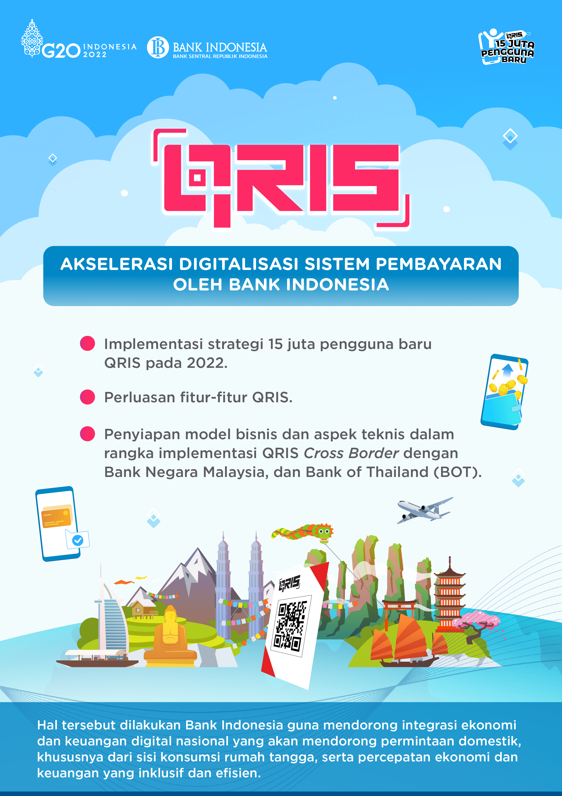

Pengantar
Perkembangan teknologi saat ini memberikan banyak manfaat dan memudahkan pekerjaan maupun aktivitas kita sehari-hari. Misalnya saja di saat pandemi, tanpa harus datang ke kantor kita tetap bisa bekerja dan melakukan rapat secara daring. Kondisi saat ini tak ubahnya seperti memasuki era baru secara perlahan. Seperti era di mana dulu kita hanya menyaksikan program televisi, kini menyaksikan streaming di jejaring sosial.
Perkembangan teknologi berjalan selaras dengan kemajuan ilmu pengetahuan serta adanya dorongan kebutuhan, seperti kebutuhan kita untuk tetap produktif di tengah pandemi. Dengan adanya perkembangan teknologi, ilmu pengetahuan dan kebutuhan tersebut, lahirlah sebuah inovasi hampir di setiap lini kehidupan. Tak terkecuali, inovasi pada sektor ekonomi keuangan. Kini, hanya dengan menggunakan gawai, transaksi dapat dengan mudah diselesaikan. Tentunya, hal tersebut tak lepas dari peran Quick Response Code Indonesia Standard atau biasa disingkat QRIS.
Bank Indonesia pun telah melakukan uji coba QR Cross-border dengan Malaysia dan Thailand yang memungkinkan konsumen dan pedagang di kedua negara dapat melakukan dan menerima pembayaran barang dan jasa melalui QR Code. QR Cross-border memiliki peran penting untuk meningkatkan efisiensi transaksi, mendukung digitalisasi perdagangan dan investasi, dan menjaga stabilitas makroekonomi dengan memperluas penggunaan penyelesaian transaksi menggunakan mata uang lokal (LCS).
Bahkan, QR Cross-border disinyalir dapat meningkatkan transaksi UMKM, karena memudahkan konsumen mancanegara untuk bertransaksi saat membeli produk lokal. Begitu pula pada sektor pariwisata, para wisatawan asing nantinya cukup menggunakan QR Cross-border jika ingin bertransaksi saat vakansi di Indonesia. Begitu juga jika kita ingin bepergian ke luar negeri. Lewat efisiensi yang ditawarkan, QR Cross-border diharapkan juga dapat mendukung percepatan pemulihan ekonomi di berbagai sektor.
Dengan berbagai keunggulan dan kemudahan yang ditawarkan, tak heran jika Cross Border Payment yang di dalamnya terdapat QR Cross-border masuk ke dalam pembahasan di jalur keuangan Presidensi G20. Bank Indonesia pun berkomitmen untuk mengembangkan pembayaran digital tersebut, dengan memperhatikan keseimbangan antara mendukung inovasi dan mitigasi risiko.

QRIS Antarnegara
QRIS Antarnegara adalah solusi pembayaran digital yang memudahkan wisatawan dan pelaku usaha untuk bertransaksi lintas negara. Dengan QRIS Antarnegara, wisatawan Indonesia dapat dengan mudah bertransaksi di luar negeri menggunakan aplikasi pembayaran domestik untuk memindai kode QR di merchant negara mitra. Sebaliknya, wisatawan internasional yang datang ke Indonesia juga dapat melakukan pembayaran di Indonesia hanya dengan memindai QRIS di merchant menggunakan aplikasi pembayaran yang berpartisipasi.
QRIS Antarnegara bertujuan untuk mempermudah transaksi perdagangan dan pariwisata, serta mendukung UMKM dengan memungkinkan mereka menerima pembayaran digital. Sistem ini juga berperan dalam memperkuat stabilitas ekonomi dengan menggunakan mata uang lokal dalam transaksi antar negara.
Selain itu, QRIS Antarnegara juga bertujuan untuk memfasilitasi aktivitas perdagangan dan sektor pariwisata, khususnya bagi UMKM, serta memperkuat stabilitas makroekonomi melalui penggunaan mata uang lokal melalui skema Local Currency Transaction dalam transaksi bilateral. QRIS Antarnegara merupakan pengembangan fitur dari QRIS yang menginterkoneksikan metode pembayaran QR Indonesia dengan negara mitra.
Dengan QRIS Antarnegara, proses pembayaran antar negara menjadi lebih praktis dan efisien. Saat ini, QRIS Antarnegara telah bekerja sama dengan beberapa negara mitra antara lain Thailand, Malaysia, dan Singapura.
PJP QRIS Antarnegara
| No | Negara | Masyarakat Indonesia yang bertransaksi di negara mitra | Wisatawan mancanegara yang bertransaksi di Indonesia | ||
|---|---|---|---|---|---|
| PJP Issuer | Jenis QR di Negara mitra | Limit transaksi | PJP Issuer | ||
| 1 | Thailand | 1. BCA 2. Bank Mandiri 3. Bank Sinarmas 4. Bank Permata 5. Bank Syariah Indonesia 6. CIMB Niaga 7. Bank Mega 8. BPD Bali 9. DANA 10. LinkAja 11. Ottocash 12. OCBC NISP 13. INA Perdana 14. BTN |
PromptPay | Mengacu pada ketentuan Bank Indonesia mengenai QRIS | 1. Bangkok Bank 2. Krungthai Bank 3. Krungsri Bank 4. CIMB Thai |
| 2 | Malaysia | 1. BCA 2. Bank Mandiri 3. Bank Sinarmas 4. Bank Permata 5. Bank Syariah Indonesia 6. CIMB Niaga 7. Bank Mega 8. BPD Bali 9. DANA 10. LinkAja 11. Ottocash 12. Finpay 13. ShopeePay 14. INA Perdana 15. BTN |
DuitNow QR | - | 1. CIMB Bank Berhad 2. Hong Leong Bank Berhad 3. Malayan Banking Berhad 4. Public Bank Berhad 5. TNG Digital Sdn. Bhd 6. Bank of China 7. Finexus Malaysia 8. BigPay Malaysia |
| 3 | Singapura | 1. BCA 2. BRI 3. Bank Mandiri 4. Bank Sinarmas 5. Bank Permata 6. Bank Syariah Indonesia 7. CIMB Niaga 8. Bank Mega 9. BPD Bali 10. DANA 11. Netzme 12. INA Perdana |
NETS QR | - | 1. OCBC Bank 2. UOB 3. DBS |